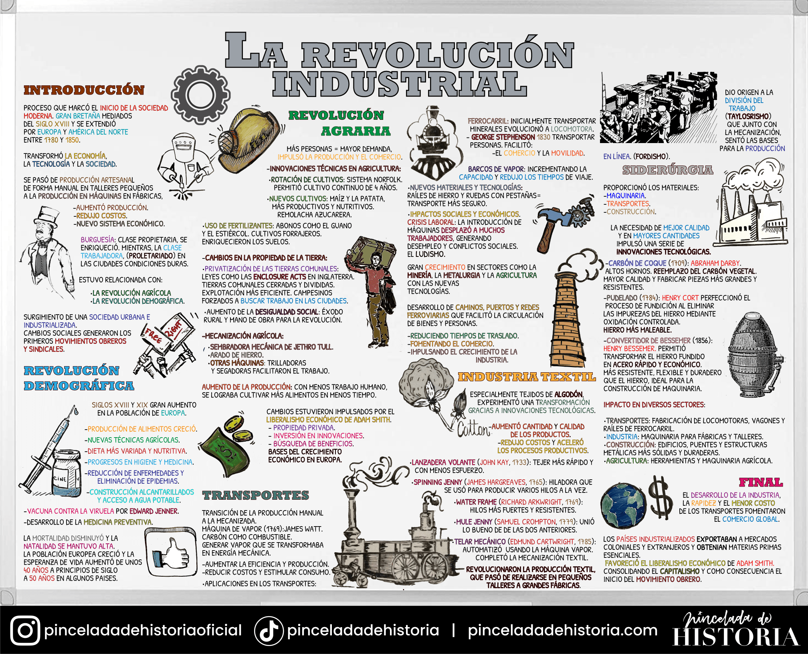

Infografía
Realiza una infografía utilizando el programa CANVA. Utiliza la información del tema para realizar el trabajo.
Ejemplo:

Aprendemos en casa, analizamos en clase.
Realiza una infografía utilizando el programa CANVA. Utiliza la información del tema para realizar el trabajo.
Ejemplo:
